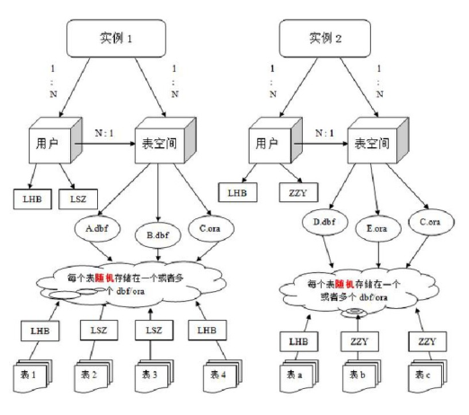

oracle的数据库不是普通的概念, oracle是有用户和表空间对数据进行管理和存放的. 但是表不是由表空间区查询的, 而是由用户去查询的. 因为不同用户可以在同一个表空间用相同名字的表. 这里区分就是用户了.

用户:scott 密码:tiger(默认) 用户:hr 密码:hr(默认)
-------------解锁用户 ---------------
alter user scott account unlock;
------------修改密码--------------
alter user scott identified by tiger;
scott用户内的表: ----dept 部门 表 ---deptno 部门编号 ---dname 部门名称 ---loc 部门城市
基本与mysql的sql语句相同, 下面说些不同的或者添加的:
select * from emp;
select empno, ename, job from emp;
答: 基本差不多, oracle查询方式是先将符合条件的记录查出来, 在从中摘取想要显示的列返回.
select count(*) from emp;
select count(1) from emp;
select count(9999) from emp;
select count(ename) from emp;
答: 前三个一样快, 最后一个稍微慢一点. oracle聚合查询过程是这样的, 首先看conut()中的参数是不是表中有的字段, 如果是, 就按这个字段进行聚合, 如果没有就按主键或者记录条数进行聚合.
模糊查询的转义 select * from emp e where e.ename like '%a_%' escape 'a'; 如上, 如果想要将下划线作为一个字符, 需要转义, 这就需要使用escape来进行, 'a'是一个随意的字符.
在oracle中, 如果使用group by ，select 后只能出现 聚合函数 或者 group by 列: select count(), deptno from emp group by deptno; -- 正确 select count(), deptno, ename from emp group by deptno; -- 错误
一个常用的单行函数: nvl(arg1, arg2) //表示如果arg1是null, 则用arg2的值替代
查看一个用户下所有的表: select table_name from user_tables;
null不能进行大小等于比较
排序中空值的问题 排序时有可能遇到依据的字段有null的情况, 这时默认会对将null当作类似无穷大的值. 这时可以通过加nulls first或者nulls last select * from emp order by comm desc nulls last; select * from emp order by comm desc nulls first;
条件表达式 case 带判断的值 when 值 then 表达式 when 值 then 表达式 when 值 then 表达式 else 表达式 end
相当于java中的: swith(判断){ case 值: 表达式; case 值: 表达式; default: 表达式 }
新概念 -- 全量表: 在进行外连接时首先要明确全量表, 然后把全量表作为左外连接的左表 或者 右外连接的右表. 全量表的特点: 全量表的中记录在生成的结果中不会丢失!(但是有可能会增加, 如果一个全量表中一条记录对应连接的另一侧的两条记录, 那么, 全量表中的一条记录会复制出一条, 这样两条记录分别对应另一个表两条记录)
全量表选择错误会导致奇怪的结果 大部分时候内连接与外连接使用哪个都可以, 但是如果全量表与另一个表连接时, 如果另一个表不存在满足条件的对应项, 那么内连接会丢失全量表中的这条记录, 而外连接不会. 左外连接和有外连接没有区别, 只不过有时候, 在一条复杂的SQL语句上再连接其它表的时候, 有时候会区别选择.
子查询的结果可以分为下面几种情况:
一行多列的一个特殊操作: 查询出和scott同部门并且同职位的员工: select * from emp e where ( e.deptno ,e.job ) = (select deptno,job from emp where ename='SCOTT');
oracle不支持limit关键字, 所以需要使用伪列rownum来实现相同效果.rownum作用是自上而下生成表中数据的行号, 从1开始. 关于rownum要注意两点:
rownum从1开始
下面通过rownum实现分页效果(查询员工表中的前三个): select * from emp where rownum < 4; 查询员工表中4-6员工: select * from (select emp.*, rownum n from emp) a where a.n > 3 and a.n < 7; 为什么查询员工表中4-6行的员工不能这么写? select * from emp where rownum < 7 and rownum > 3; 因为rownum不支持大于比较.
oracle分页另一种方式:select * from (select row_number)
举例:
查询员工表中工资最高的前三名:
select * from (select * from emp order by sal desc) where rownum < 4;
查询员工表中工资4-6名的员工:
select * from (select a.*, rownum n from (select * from emp order by sal desc) a) b where b.n > 3 and b.n < 7;
对于这个例子, 还有一种分页方式:
select * from (select row_number() over (order by sal desc) rm ,e.* from emp e) t where t.rm < 7 and t.rm > 3;
不同数据库的分页操作是不同的: mysql:limit oracle:rownum sqlServer:top
oracle中成rownum为伪列, 同样的伪列还有rowid
举例:
select sum(a.z),
sum(case a.y when '1980' then a.z end) "1980",
sum(case a.y when '1981' then a.z end) "1981",
sum(case a.y when '1982' then a.z end) "1982",
sum(case a.y when '1987' then a.z end) "1987"
from (select count(*) z, to_char(hiredate, 'yyyy') y from emp group by to_char(hiredate, 'yyyy')) a;
----左表大 （数据量多） 右表小 （数据量少） 的时候 in效率高 ----左表小 （数据量少） 右表大 （数据量多） 的时候 exists效率高
并集:union和union all 交集:intersect 差集:minus
以上将两次查询的结果作为集合进行运算. union与union all的区别, union all是直接将两个查询结果合并到一起, union是去重重复记录之后合并.